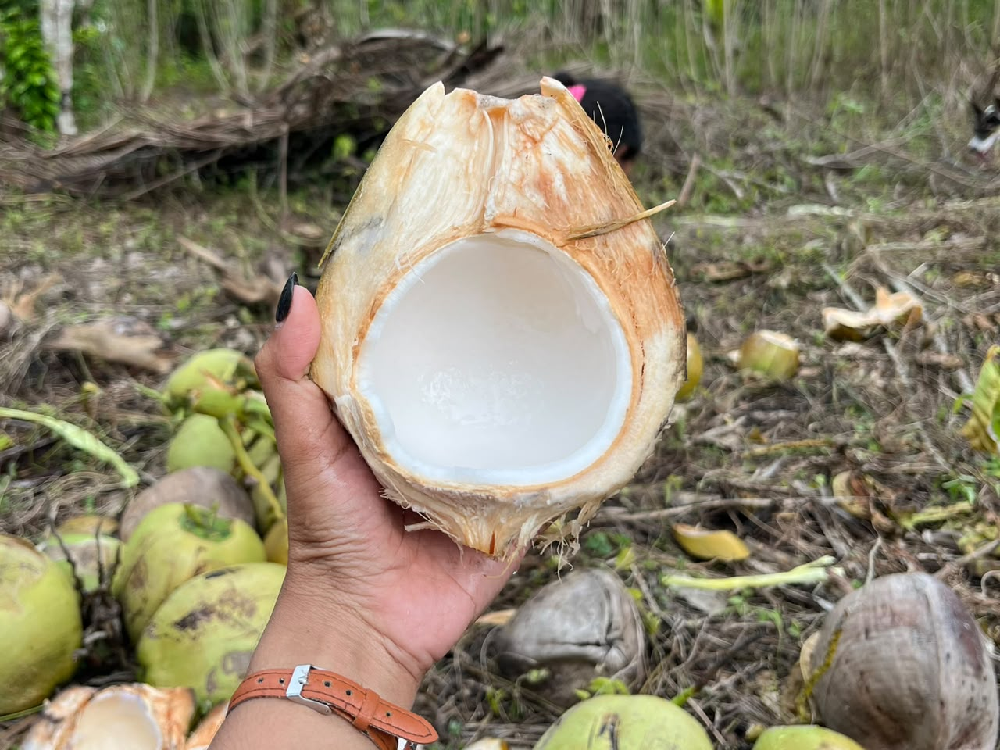
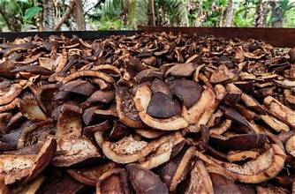
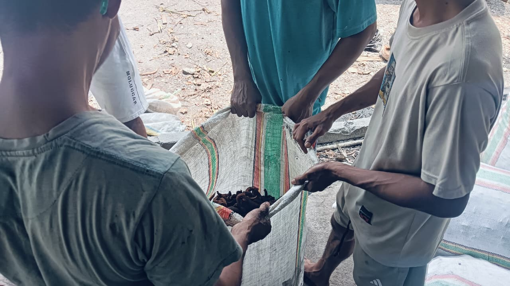
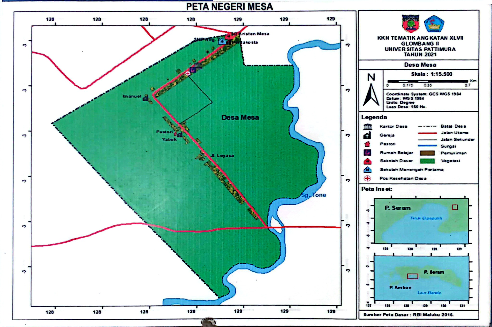

815Jumlah Penduduk
WEBSITE RESMI PROFIL DESA
Mengenal Desa,
Mengenal Desa,
Merawat Kebersamaan
Desa Yang Tumbuh Dari Kebersamaan, Kekayaan Alam, Dan Semangat Masyarakat Untuk Membangun Masa Depan
97535Kode Pos Desa
MALUKU, INDONESIABERSAMA MEMBANGUN DESA ✳
97535Kode Pos
3Jumlah RT/RW*
3Gereja
3Sekolah
01 / TENTANG DESA
Berawal Dari Sejarah,
Bertumbuh Bersama
Sudah 42 tahun Negeri Mesa berada di dataran Waipia, Pulau Seram, setelah sebelumnya bermukim di Pulau Teon.
Masyarakat Mesa dievakuasi oleh Pemerintah menggunakan KM Pusparagam pada tanggal 2 Februari 1978, kemudian ditampung sementara di Desa Makariki, Kecamatan Amahai. Setelah dimukimkan di dataran Waipia, Pemerintah menyiapkan fasilitas perumahan dan lahan garapan. Namun, tidak seluruh masyarakat adat Mesa bersedia mendiami dan mengelola lahan tersebut, sebagaimana disampaikan melalui surat pernyataan sikap kepada Pemerintah Republik Indonesia.
Untuk menjamin terpenuhinya syarat kependudukan bagi berlangsungnya pemerintahan di Negeri Mesa, Kecamatan TNS Waipia, Pemerintah Negeri saat itu membuka kesempatan bagi penduduk yang bersedia menjadi warga Negeri Mesa. Pada tahun 1981, Bupati Maluku Tengah mengesahkan 35 kepala keluarga yang bukan masyarakat adat sebagai kelompok pertama yang berdomisili di Negeri Mesa. Saat itu, pemerintahan dijalankan oleh Penjabat Kepala Desa Mesa Jaconias Littaay dan Sekretaris Desa Izaac F. Littaay.
02 / POTENSI DESA
Dari Kelapa,
Menjadi Sumber Penghidupan
Kelapa merupakan salah satu potensi pangan desa yang dapat diolah menjadi berbagai produk bernilai ekonomi.

01 — BAHAN BAKU
Kelapa
Kelapa menjadi bahan utama yang dimanfaatkan masyarakat. Buah, air, sabut, tempurung, dan daunnya dapat memiliki kegunaan yang berbeda.

02 — OLAHAN
Kopra
Daging kelapa dikeringkan menjadi kopra sebagai bahan baku pengolahan minyak kelapa dan produk turunannya.

03 — PRODUK LAIN
Olahan & Hasil Sampingan
Potensi lainnya berupa minyak kelapa, santan, arang tempurung, serta pemanfaatan sabut kelapa sesuai kemampuan warga.
Potensi Lokal, Peluang Masa Depan
Pengolahan yang baik, teratur, dan konsisten membantu masyarakat memenuhi kebutuhan konsumen yang lebih luas.
03 / PENDIDIKAN
Pendidikan Untuk
Masa Depan Desa
Negeri Mesa memiliki 3 sekolah untuk mendukung pendidikan anak-anak desa, termasuk pada jenjang Sekolah Dasar dan Sekolah Menengah Pertama.
PENDIDIKAN ANAK USIA DINI
PAUD Ni Khen Mesa
Pendidikan Anak Usia Dini bagi anak-anak di Negeri Mesa.
SEKOLAH DASAR
Sekolah Dasar Kristen Mesa
Pendidikan dasar bagi anak-anak di Negeri Mesa.
Lihat foto lingkungan sekolah2 foto
SEKOLAH MENENGAH PERTAMA
SMP Negeri 86 Maluku Tengah
Pendidikan lanjutan tingkat pertama bagi anak-anak di Negeri Mesa.
Lihat foto lingkungan sekolah2 foto
04 / TEMPAT IBADAH
Ruang Ibadah,
Ruang Kebersamaan
Di Desa Mesa terdapat tiga Gereja yang menjadi tempat masyarakat melaksanakan kegiatan peribadatan.
GEREJA 01
GPM YABOK
GEREJA PROTESTAN MALUKU YABOK, JEMAAT MESA, Negeri Mesa, Kec. Teon Nila Serua, Kabupaten Maluku Tengah, Maluku
GEREJA 02
GEREJA PENTAKOSTA
GEREJA PENTAKOSTA PUSAT SURABAYA GUNUNG MORIA MESA, Negeri Mesa, Kec. Teon Nila Serua, Kabupaten Maluku Tengah, Maluku
GEREJA 03
G.K.R.IA
GEREJA KISTEN REFORMASI INDONESIA JEMAAT IMANUEL MESA, Negeri Mesa, Kec. Teon Nila Serua, Kabupaten Maluku Tengah, Maluku
05 / DENAH DESA
Kenali Wilayah
Desa Mesa

PLUS CODE NEGERI MESAQ2F2+C7G Mesa, Kec. Teon Nila Serua, Kabupaten Maluku Tengah, Maluku
Denah ditampilkan sesuai gambar yang diunggah. Untuk hasil yang lebih jelas, gunakan salinan peta beresolusi tinggi jika tersedia.
06 / KONTAK
Hubungi
Negeri Mesa
Website ini menjadi jendela untuk mengenalkan identitas, potensi, dan kebersamaan masyarakat desa.
KIRIM PESAN
Ada yang ingin disampaikan?
Isi formulir ini untuk mengirim pesan langsung melalui WhatsApp.